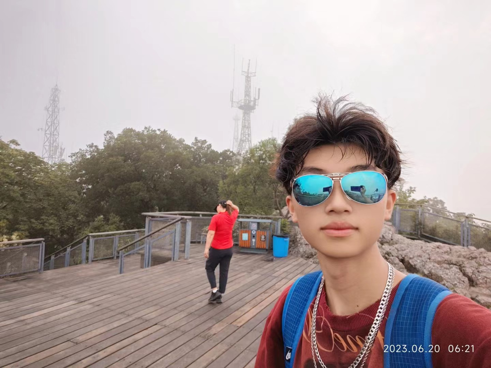

const problem = {
user: "卡在什么地方",
next: "现在可以做什么"
};
user: "卡在什么地方",
next: "现在可以做什么"
};
从真实处境出发，而不是先选择功能。OfferPilot、姜记学情本和《早八在逃》都是先定义玩家或用户的“下一步”，再组织功能与反馈。

DIGITAL MEDIA / PRODUCT / GAME
移动鼠标，唤醒工作现场。
ENTER WORK / 05 ↘ 01 / FRAME02 / MOTION03 / SHIP02 / HOW THE WORK IS BUILT
点击一行，展开它背后的判断、流程和交付。
从真实处境出发，而不是先选择功能。OfferPilot、姜记学情本和《早八在逃》都是先定义玩家或用户的“下一步”，再组织功能与反馈。
界面不是静态画面。路线、任务、战斗、错题状态和风险评分，都要让人看得见自己刚刚做了什么，以及接下来会发生什么。
我会把结构、视觉、前端和内容一起完成：让产品可以被试用、游戏可以被游玩、项目可以被真正评价。
02 / PROFILE

我习惯从一个具体的处境开始：用户卡在哪里，什么反馈能推动下一步，哪些细节决定它会不会被真正使用。然后把产品结构、交互、视觉、AI 工作流和前端实现接成同一个结果。